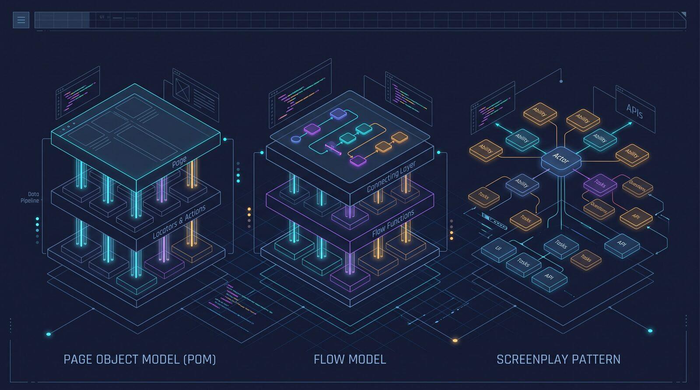

When Your Page Object Model Stops Scaling: Flow Model and Screenplay Pattern Compared
Page objects work until the suite grows. A look at when to add a flow layer, when Screenplay earns its complexity, and when to just stay put.
Most UI automation suites start the same way: a page object class per screen, locators as properties, methods that describe actions. It works great for the first few dozen tests. Then the suite grows, checkout and onboarding and settings all share steps, and suddenly three different specs are reimplementing "log in, add an item, go to checkout" in three slightly different ways. The usual fix is to keep adding methods to page classes until one of them is eight hundred lines long and nobody wants to touch it. That's the point where it's worth knowing there are two established ways out, not just one, and that neither is free.

Where Page Object Model stops helping
Page Object Model (POM) encapsulates locators and low-level interactions behind a class per page, so a test calls LoginPage.login(user, password) instead of writing raw selectors. The benefits are real: less duplication than raw Selenium calls, a shared vocabulary, and a shallow learning curve that makes it the right default for small teams and small suites.
The trouble shows up as the suite and the team grow. POM is a convention, not a strict specification, so every team implements it a little differently, which makes large suites inconsistent across contributors. Business workflows that span several pages (checkout, onboarding, a multi-step form) don't live anywhere, so they get copy-pasted into test after test. Page classes end up mixing locators, low-level actions, and workflow logic, which breaks single-responsibility and makes refactors risky. None of this means POM was the wrong choice — it means the suite has outgrown the pattern it started with.
The middle ground: a flow layer
The simplest fix is to add a thin layer of reusable business flows on top of the existing page objects, rather than replacing them. A flow function reads as a goal; the page objects underneath stay exactly as they are.
// flows/checkout.js
export const CheckoutFlow = {
async buyItem(item) {
await ProductsPage.open(item);
await ProductPage.addToCart();
await CartPage.goToCheckout();
await CheckoutPage.payWithSavedCard();
},
};
// test
test('guest can buy a single item', async () => {
await CheckoutFlow.buyItem('wireless-mouse');
await expect(OrderPage.confirmationBanner).toBeVisible();
});This has no framework dependency and drops into an existing Playwright, Cypress, or Selenium suite without a rewrite. The tradeoff is that there's no standard for what belongs in a flow versus a page object, so without a convention the flows folder can turn into a dumping ground of half-business-logic, half-UI-detail functions that are just as tangled as the original page classes, just one layer removed.
The bigger jump: Screenplay Pattern
Screenplay goes further by changing the unit of abstraction from "a page" to "an actor." An actor is given abilities (such as browsing the web or calling an API), performs tasks (actions with no return value), and asks questions (reads that return state for assertions). Interactions are generic, so a single "fill field" or "click" interaction works against any element, instead of every page object needing its own copy.
const alex = Actor.named('Alex').whoCan(BrowseTheWeb.using(page));
await alex.attemptsTo(
Login.withCredentials('alex@example.com', 'secret'),
AddItemToCart.named('wireless-mouse'),
Checkout.withSavedCard(),
);
const confirmation = await alex.asks(ConfirmationBanner.text());
expect(confirmation).toContain('Order confirmed');Because an actor's abilities aren't limited to the browser, the same actor can drive UI steps, call an API to seed state, and query a database to verify a side effect, all through one consistent vocabulary. That's genuinely useful for large, multi-actor scenarios (two users negotiating a trade, an admin approving something a customer submitted) where POM and even a flow layer tend to fall apart.
Pitfalls and limits
Screenplay's cost is real, not theoretical. It requires more upfront design and OOP comfort than most QA teams have on day one, the community and tooling are smaller and mostly concentrated around specific implementations (Serenity/JS, ScreenPy, Boa Constrictor), and onboarding a new tester takes noticeably longer than handing them a page object. Teams that adopt it for a small or medium suite usually end up with more ceremony than value — the pattern is built for scale, and below that scale it's just overhead.
The flow layer avoids that cost but inherits a different one: because there's no formal specification, two engineers on the same team will draw the line between "flow" and "page object" differently, and without an explicit team convention written down somewhere, the abstraction drifts. And regardless of which pattern a team picks, none of them fix flaky, slow UI tests on their own — the structural pattern governs maintainability, not reliability. A common piece of advice from teams that have tried all three: perform a given UI action once to prove it works, then use API calls for setup and state changes everywhere else, since that cuts flakiness and runtime no matter which layer you're using.
What to do next
Count the maintainers on your automation suite and look at how many workflows get copy-pasted across spec files right now — that's a better signal than suite size alone. If it's one to three people and duplication is mild, stay on POM; it's not broken. If workflows are duplicated across five or more specs, write down (literally, in a README) what belongs in a page object versus a flow before adding the flow layer, so it doesn't become its own mess. Only consider Screenplay if the team has four or more maintainers, enough OOP background to keep the discipline, and scenarios that genuinely span UI, API, and database in the same test — otherwise the learning curve will cost more than the suite gains.
Sources
- Choosing the Right Test Automation Design Pattern: Page Object Model, Flow Model Pattern, or Screenplay Pattern? — Cloudflight Engineering
- A Journey to Better Automation with the Screenplay Pattern — Applitools
- Playwright Page Object Model — SSW Rules
Većina paketa za UI automatizaciju počinje na isti način: jedna page object klasa po ekranu, lokatori kao svojstva, metode koje opisuju akcije. To odlično radi za prvih nekoliko desetina testova. Onda paket naraste, checkout, onboarding i podešavanja počnu da dijele korake, i odjednom tri različita spec fajla implementiraju „prijavi se, dodaj artikal, idi na checkout" na tri malo različita načina. Uobičajeno rješenje je da se page klasama dodaju nove metode, sve dok jedna od njih ne dostigne osamsto linija i niko više ne želi da je dira. To je trenutak kada vrijedi znati da postoje dva ustaljena izlaza, a ne samo jedan, i da nijedan nije besplatan.
Gdje Page Object Model prestaje da pomaže
Page Object Model (POM) sakriva lokatore i interakcije niskog nivoa iza po jedne klase za svaku stranicu, pa test poziva LoginPage.login(user, password) umjesto da piše sirove selektore. Koristi su stvarne: manje dupliranja nego kod direktnih Selenium poziva, zajednički rječnik i blaga kriva učenja, zbog čega je to pravi izbor za male timove i male pakete testova.
Problemi se pojavljuju kako rastu paket i tim. POM je konvencija, a ne stroga specifikacija, pa ga svaki tim implementira malo drugačije, zbog čega veliki paketi postaju nedosljedni od autora do autora. Poslovni tokovi koji se protežu kroz više stranica (checkout, onboarding, forma u više koraka) nemaju svoje mjesto, pa se kopiraju iz testa u test. Page klase na kraju miješaju lokatore, akcije niskog nivoa i logiku tokova, što krši princip jedne odgovornosti i čini refaktorisanje rizičnim. Ništa od ovoga ne znači da je POM bio pogrešan izbor — znači da je paket prerastao obrazac sa kojim je počeo.
Srednje rješenje: sloj tokova
Najjednostavnije rješenje je da se iznad postojećih page objekata doda tanak sloj poslovnih tokova koji se mogu ponovo koristiti, umjesto da se page objekti zamijene. Flow funkcija se čita kao cilj, a page objekti ispod nje ostaju potpuno isti.
// flows/checkout.js
export const CheckoutFlow = {
async buyItem(item) {
await ProductsPage.open(item);
await ProductPage.addToCart();
await CartPage.goToCheckout();
await CheckoutPage.payWithSavedCard();
},
};
// test
test('guest can buy a single item', async () => {
await CheckoutFlow.buyItem('wireless-mouse');
await expect(OrderPage.confirmationBanner).toBeVisible();
});Ovo ne zavisi ni od jednog frejmvorka i ubacuje se u postojeći Playwright, Cypress ili Selenium paket bez prepravljanja. Cijena je to što ne postoji standard koji kaže šta pripada toku, a šta page objektu, pa bez dogovorene konvencije folder sa tokovima može postati smetlište funkcija koje su pola poslovna logika, pola UI detalji — jednako zapetljane kao i prvobitne page klase, samo jedan sloj dalje.
Veći skok: Screenplay obrazac
Screenplay ide dalje tako što mijenja jedinicu apstrakcije sa „stranice" na „aktera". Akter dobija sposobnosti (abilities, npr. pretraživanje weba ili pozivanje API-ja), izvršava zadatke (tasks, akcije bez povratne vrijednosti) i postavlja pitanja (questions, čitanja koja vraćaju stanje za provjere). Interakcije su generičke, pa jedna interakcija „popuni polje" ili „klikni" radi nad bilo kojim elementom, umjesto da svaki page objekat ima sopstvenu kopiju.
const alex = Actor.named('Alex').whoCan(BrowseTheWeb.using(page));
await alex.attemptsTo(
Login.withCredentials('alex@example.com', 'secret'),
AddItemToCart.named('wireless-mouse'),
Checkout.withSavedCard(),
);
const confirmation = await alex.asks(ConfirmationBanner.text());
expect(confirmation).toContain('Order confirmed');Pošto sposobnosti aktera nisu ograničene na browser, isti akter može da izvršava UI korake, pozove API da pripremi stanje i upita bazu da provjeri sporedni efekat — sve kroz jedan dosljedan rječnik. To je zaista korisno u velikim scenarijima sa više aktera (dva korisnika koja pregovaraju o razmjeni, administrator koji odobrava nešto što je kupac poslao), gdje se POM, pa čak i sloj tokova, obično raspadnu.
Zamke i ograničenja
Cijena Screenplay-a je stvarna, a ne teorijska. Zahtijeva više dizajna unaprijed i više sigurnosti u OOP-u nego što većina QA timova ima prvog dana, zajednica i alati su manji i uglavnom koncentrisani oko konkretnih implementacija (Serenity/JS, ScreenPy, Boa Constrictor), a uvođenje novog testera u posao traje primjetno duže nego kada mu se samo da page objekat. Timovi koji ga usvoje za mali ili srednji paket obično dobiju više ceremonije nego koristi — obrazac je napravljen za veliki obim, a ispod tog obima je samo dodatni teret.
Sloj tokova izbjegava taj trošak, ali nasljeđuje drugi: pošto ne postoji formalna specifikacija, dva inženjera u istom timu povući će granicu između „toka" i „page objekta" na različitim mjestima, a bez eksplicitne timske konvencije zapisane negdje, apstrakcija počinje da se razilazi. I bez obzira na to koji obrazac tim izabere, nijedan sam po sebi ne rješava nestabilne (flaky) i spore UI testove — strukturni obrazac utiče na održivost, ne na pouzdanost. Čest savjet timova koji su probali sva tri pristupa: izvršite datu UI akciju jednom da dokažete da radi, a zatim svuda drugdje koristite API pozive za pripremu i promjene stanja, jer to smanjuje nestabilnost i trajanje testova bez obzira na to koji sloj koristite.
Šta dalje
Prebrojte ljude koji održavaju vaš paket za automatizaciju i pogledajte koliko se tokova trenutno kopira između spec fajlova — to je bolji signal od same veličine paketa. Ako je u pitanju jedna do tri osobe i dupliranje je blago, ostanite na POM-u; on nije pokvaren. Ako se tokovi ponavljaju u pet ili više spec fajlova, prije uvođenja sloja tokova zapišite (doslovno, u README) šta pripada page objektu, a šta toku, da ne bi i taj sloj postao nered. O Screenplay-u razmišljajte tek ako tim ima četiri ili više ljudi koji održavaju testove, dovoljno OOP iskustva da održi disciplinu i scenarije koji zaista u istom testu obuhvataju UI, API i bazu — u suprotnom će kriva učenja koštati više nego što paket dobije.
Izvori
- Choosing the Right Test Automation Design Pattern: Page Object Model, Flow Model Pattern, or Screenplay Pattern? — Cloudflight Engineering
- A Journey to Better Automation with the Screenplay Pattern — Applitools
- Playwright Page Object Model — SSW Rules